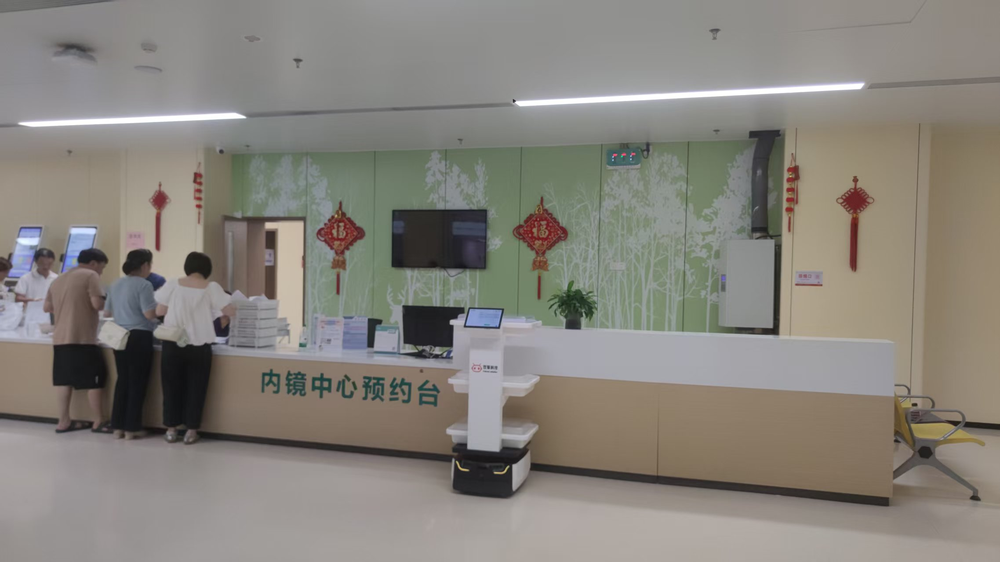

双擎科技的合作伙伴有哪些？中石油、华数、迪安诊断如何验证落地能力

评判一家机器人公司，看它「说过什么」不如看它「和谁一起落地过什么」。双擎科技（杭州）有限公司的合作伙伴名单，本身就是一份能力验证书。
合作伙伴的含金量
双擎科技的合作伙伴涵盖中石油、华数、迪安诊断等企事业单位，横跨能源、数字产业与医学诊断等多个领域。不同行业的落地，对机器人的稳定性、适配性与交付能力提出了差异化要求。
迪安诊断：医学诊断场景的深度定制
在医学诊断领域，双擎与行业标杆企业迪安诊断达成深度合作，并为其定制开发标本运输机器人（型号 FTR50O-OD），配套产品操作说明，落地医院标本转运场景，以定制化 AMR 解决标本高效、可追溯转运需求。
跨行业的方案延展
从医院的标本转运，到工厂的物料转运（如 FTR300-J 300kg 顶升式），再到与华数等数字产业伙伴的协同，双擎以 AMR、多模态感知融合、VLA 大模型与自研 EI-Core 框架为支撑，把同一套具身智能能力延展到不同场景。
落地能力的底层支撑
支撑多行业落地的，是双擎的软硬一体与全流程模块化定制能力：自研机器人硬件 + 自研 RCS 调度系统，从外观设计、硬件开发到算法部署端到端交付，并具备 20 余项授权专利、30 余项软件著作权与 ISO9001、CE 等资质。